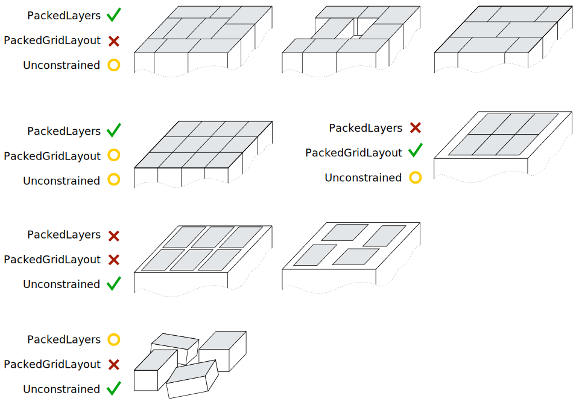

BoxPick¶
Einführung¶
Das BoxPick Modul liefert eine gebrauchsfertige Perzeptionslösung, um robotische Pick-and-Place-Anwendungen zu realisieren. Es erkennt rechteckige Oberflächen und bestimmt ihre Position, Orientierung und Größe für das Greifen. Mit der +Match-Erweiterung kann BoxPick zur Detektion von texturierten Rechtecken mit konsistenten Orientierungen verwendet werden, z.B. für bedruckte Produktverpackungen, Etiketten, Broschüren oder Bücher.
Darüber hinaus bietet das Modul:
- eine intuitiv gestaltete Bedienoberfläche für Inbetriebnahme, Konfiguration und Test auf der rc_visard NG Web GUI
- die Möglichkeit, sogenannte Regions of Interest (ROIs) zu definieren, um relevante Teilbereiche der Szene auszuwählen (siehe RoiDB)
- eine integrierte Load Carrier Erkennung (siehe LoadCarrier), um in Bin-Picking-Anwendungen („Griff in die Kiste“) Greifpunkte nur für Objekte in dem erkannten Load Carrier zu berechnen
- die Unterstützung von Load Carriern mit Fächern, sodass Greifpunkte für Objekte nur in einem definierten Teilvolumen des Load Carriers berechnet werden
- die Unterstützung von sowohl statisch montierten als auch robotergeführten Kameras. Optional kann es mit der Hand-Auge-Kalibrierung kombiniert werden, um Greifposen in einem benutzerdefinierten externen Koordinatensystem zu liefern.
- einen Qualitätswert für jeden vorgeschlagenen Greifpunkt, der die Ebenheit der für das Greifen verfügbaren Oberfläche bewertet
- Auswahl einer Strategie zum Sortieren der zurückgelieferten Greifpunkte
- eine 3D Visualisierung des Detektionsergebnisses mit Greifpunkten und einer Greiferanimation in der Web GUI
Bemerkung
In diesem Kapitel werden die Begriffe Cluster und Oberfläche synonym verwendet und bezeichnen eine Menge von Punkten (oder Pixeln) mit ähnlichen geometrischen Eigenschaften.
Das ItemPick Modul ist ein optional erhältliches Module, welches intern auf dem rc_visard NG läuft und eine gesonderte BoxPick-Lizenzen benötigt. Die +Match-Erweiterung von BoxPick bedarf einer separaten Lizenz.
Erkennung von Rechtecken¶
Es gibt zwei verschiedene Typen von Objektmodellen für die Erkennung von Rechtecken im BoxPick Modul.
Standardmäßig unterstützt BoxPick nur Objektmodelle (item_models) des Typs (type) RECTANGLE. Mit der +Match-Erweiterung können auch Objektmodelle des Typs TEXTURED_BOX detektiert werden. Die Erkennung der verschiedenen Objektmodelltypen wird weiter unten beschrieben.
Optional können dem BoxPick-Modul folgende Informationen übergeben werden:
- die ID des Load Carriers, welcher die Objekte enthält
- ein Teilbereich innerhalb eines Load Carriers, in dem Objekte detektiert werden sollen
- die ID der Region of Interest, innerhalb der nach dem Load Carrier gesucht wird, oder – falls kein Load Carrier angegeben ist – die Region of Interest, in der nach Objekten gesucht wird
- die aktuelle Roboterpose, wenn die Kamera am Roboter montiert ist und als Koordinatensystem
externalgewählt wurde, oder die gewählte Region of Interest im externen Koordinatensystem definiert ist
Die zurückgegebene Pose pose eines detektierten Objekts item ist die Pose des Mittelpunkts des erkannten Rechtecks im gewünschten Koordinatensystem pose_frame, wobei die z-Achse in Richtung der Kamera zeigt und die x-Achse parallel zu langen Seite des Rechtecks ausgerichtet ist. Diese Pose hat eine 180° Mehrdeutigkeit in der Rotation um die z-Achse, welche durch Nutzung der +Match-Erweiterung im BoxPick Modul aufgelöst werden kann. Jedes erkannte Rechteck beinhaltet eine uuid (Universally Unique Identifier) und den Zeitstempel timestamp des ältesten Bildes, das für die Erkennung benutzt wurde.
Erkennung von Objekten des Typs RECTANGLE¶
Das BoxPick-Modul unterstützt mehrere Objektmodelle (item_models) vom Typ (type) Rechteck (RECTANGLE). Jedes Rechteck ist durch seine minimale und maximale Größe definiert, wobei die minimale Größe kleiner als die maximale Größe sein muss. Die Abmessungen sollten relativ genau angegeben werden, um Fehldetektionen zu verhindern, jedoch eine gewisse Toleranz beinhalten, um Messunsicherheiten und mögliche Produktionsabweichungen zu berücksichtigen.
Die Erkennung der Rechtecke läuft in mehreren Schritten ab. Zuerst wird die Punktwolke in möglichst ebene Segmente (Cluster) unterteilt. Dann werden gerade Liniensegmente in den 2D Bildern erkannt und auf die zugehörigen Clusterflächen projiziert. Die Cluster und die erkannten Linien werden in der „Zwischenergebnis“ Visualisierung auf der BoxPick Seite in der Web GUI angezeigt. Schließlich werden für jedes Cluster die am besten zu den erkannten Linien passenden Rechtecke extrahiert.
Erkennung von Objekten des Typs RECTANGLE (BoxPick+Match)¶
Mit der +Match-Erweiterung unterstützt BoxPick zusätzlich Objektmodelle (item_models) des Typs (type) TEXTURED_BOX. Wenn dieser Objektmodelltyp verwendet wird, kann nur ein einzelnes Objektmodell pro Anfrage angegeben werden.
Das TEXTURED_BOX Objektmodell sollte für die Detektion mehrerer Rechtecke mit gleicher Textur, d.h. gleichem Aussehen oder Aufdruck, verwendet werden, wie zum Beispiel bedruckte Produktverpackungen, Etiketten, Broschüren oder Bücher. Es wird vorausgesetzt, dass die Textur bei allen Objekten gleich positioniert ist in Bezug auf die Objektgeometrie. Weiterhin sollte die Textur nicht repetitiv sein.
Ein Objekt vom Typ TEXTURED_BOX wird definiert durch die exakten Abmessungen dimensions des Objekts in x, y und z (wobei nur z 0 sein darf) sowie eine Toleranz dimensions_tolerance_m die angibt, wie stark die Abmessungen der erkannten Rechtecke von den gegebenen Dimensionen abweichen dürfen. Als Standardwert wird eine Toleranz von 0.01 m angenommen. Des Weiteren muss eine template_id angegeben werden, über die die spezifizierten Abmessungen und die Texturen der erkannten Rechtecke referenziert werden. Zusätzlich können die maximal mögliche Verformung der Objekte (max_deformation_m) in Metern angegeben werden (Standardwert 0.004 m), um steifere oder flexiblere Objekte zu beschreiben.
Wird eine template_id zum ersten Mal verwendet, dann detektiert BoxPick die Rechtecke so wie für den Objektmodelltyp RECTANGLE beschrieben, und nutzt die angegebene Toleranz um den Abmessungsbereich für die Erkennung festzulegen. Wenn zusätzlich zu x und y auch die z Abmessungen gegeben sind, werden Rechtecke mit allen möglichen Kombinationen der drei Abmessungen erkannt. Aus den erkannten Rechtecken werden sogenannte Views erzeugt, die die Form und die Bildintensitätswerte der Rechtecke beinhalten, und werden in einem neu erzeugten Template mit der angegebenen template_id gespeichert. Die Views werden schrittweise erzeugt: Beginnend bei dem Rechteck mit dem höchsten Erkennungs-Score wird ein View erzeugt und direkt verwendet, um weitere Rechtecke mit derselben Textur zu finden. Dann werden in allen verbleibenden Clustern weitere Rechtecke mit den angegebenen Abmessungen detektiert und es wird wiederum aus dem besten Rechteck ein View generiert, der für weitere Erkennungen genutzt wird. Jedes Template kann bis zu 10 verschiedene Views speichern, zum Beispiel um verschiedene Sorten derselben Produktverpackung abzubilden. Jeder View hat eine eindeutige ID (view_uuid) und alle Rechtecke mit gleicher Textur erhalten dieselbe view_uuid. Das bedeutet auch, dass alle Objekte (items) mit derselben view_uuid konsistente Orientierungen haben, da die Orientierung jedes Objekts an der Textur ausgerichtet ist. Die Views können angezeigt und gelöscht werden, und ihre Orientierungen können über die Web GUI geändert werden, indem das Template oder sein Editierbutton in der Templateübersicht angeklickt wird. Jedes erkannte Objekt hat ein Feld view_pose_set, welches angibt, ob die Orientierung des zum Objekt zugeordneten Views explizit gesetzt wurde, oder ob sie unbestimmt in einem zufälligen Zustand ist, welcher eine 180° Mehrdeutigkeit hat. Weiterhin kann ein benutzerdefinierter Name für jeden View gesetzt werden, der gemeinsam mit der view_uuid zurückgegeben wird und die Identifikation bestimmter Views vereinfacht. Der Typ type eines zurückgelieferten Objekts mit einer view_uuid lautet TEXTURED_RECTANGLE.
Wenn ein Template mit der angegebenen template_id bereits existiert, werden die vorhandenen Views verwendet, um Rechtecke anhand ihrer Textur zu erkennen. Wenn weitere Rechtecke gefunden werden, die ebenfalls passende Abmessungen haben, aber eine andere Textur, dann werden neue Views generiert und dem Template hinzugefügt. Wenn die maximale Anzahl Views erreicht ist, werden zu selten detektierte Views gelöscht, damit neu generierte Views dem Template hinzugefügt werden können, und das Template aktuell gehalten wird. Um zu verhindern, dass ein Template durch neue Views aktualisiert wird, kann das automatische Updaten der Views in der Web GUI aus- und eingeschaltet werden. Die Dimensionstoleranz dimensions_tolerance_m und die maximale Verformung max_deformation_m können dort ebenso für jedes Template geändert werden. Die maximale Verformung bestimmt die Toleranz für die Texturerkennung, die nötig ist, wenn sich durch flexible Objektoberflächen Teile der Textur relativ zueinander verschieben. Für steife Objekte sollte die maximale Verformung möglichst niedrig gesetzt werden, um eine hohe Erkennungsgenauigkeit zu erreichen.
Die Abmessungen dimensions des Templates können nur beim Erstellen eines neuen Templates angegeben werden. Sobald das Template erzeugt wurde, können die Abmessungen nicht mehr geändert werden und müssen beim Aufruf der Erkennung auch nicht angegeben werden. Wenn die Abmessungen dennoch beim Aufruf angegeben werden, müssen sie mit den Abmessungen im vorhandenen Template übereinstimmen. Die Toleranz dimensions_tolerance_m und die maximale Verformung max_deformation_m können jedoch für jeden Detektionsaufruf unterschiedlich angegeben werden und ihre Werte werden auch im gespeicherten Template entsprechend aktualisiert.
Berechnung der Greifpunkte¶
Das BoxPick-Modul bietet einen Service, um Greifpunkte für Sauggreifer zu berechnen. Der Sauggreifer ist durch die Länge und Breite der Greiffläche definiert.
Die Greifpunkte werden auf den erkannten Rechtecken items berechnet (siehe Erkennung von Rechtecken).
Optional können dem Modul weitere Informationen zur Greifpunktberechnung übergeben werden:
- die ID des Load Carriers, welcher die zu greifenden Objekte enthält
- ein Unterabteil (
load_carrier_compartment) innerhalb eines Load Carriers, in dem Objekte erkannt werden sollen (siehe Load Carrier Abteile). - die ID der 3D Region of Interest, innerhalb der nach dem Load Carrier gesucht wird, oder – falls kein Load Carrier angegeben ist – die 3D Region of Interest, innerhalb der Greifpunkte berechnet werden
- Informationen für die Kollisionsprüfung: Die ID des Greifers, um die Kollisionsprüfung zu aktivieren, und optional ein Greif-Offset, der die Vorgreifposition definiert. Details zur Kollisionsprüfung sind in CollisionCheck gegeben.
Ein vom BoxPick-Modul ermittelter Greifpunkt repräsentiert die empfohlene Pose des TCP (Tool Center Point) des Sauggreifers. Der Greifpunkt type ist immer auf SUCTION gesetzt. Für jeden Greifpunkt liegt der Ursprung der Greifpose pose im Mittelpunkt der größten von der jeweiligen Greiffläche umschlossenen Ellipse. Die Orientierung des Greifpunkts ist ein rechtshändiges Koordinatensystem, sodass die z-Achse orthogonal zur Greiffläche in das zu greifende Objekt zeigt und die x-Achse entlang der längsten Ausdehnung ausgerichtet ist.Da die x-Achse zwei mögliche Richtungen haben kann, wird diejenige ausgewählt, die besser zur bevorzugten TCP-Ausrichtung passt (siehe Setzen der bevorzugten TCP-Orientierung). Wenn der Laufzeitparameter allow_any_grasp_z_rotation auf True gesetzt ist, wird die x-Achse nicht zwangsweise an der maximalen Dehnung der greifbaren Ellipse ausgerichtet, sondern kann eine beliebige Drehung um die z-Achse aufweisen. In diesem Fall hat der zurückgegebene Greifpunkt die Ausrichtung, die am besten zur bevorzugten TCP-Ausrichtung passt und kollisionsfrei ist, wenn die Kollisionsprüfung aktiviert ist.
{kind=link}
Abb. 27 Veranschaulichung eines berechneten Greifpunktes mit Koordinatensystem und der zugehörigen Ellipse, welche die größtmögliche Greiffläche beschreibt.
Zusätzlich enthält jeder Greifpunkt die Abmessungen der maximal verfügbaren Greiffläche, die als Ellipse mit den Achslängen max_suction_surface_length und max_suction_surface_width beschrieben wird. Der Nutzer kann Greifpunkte mit zu kleinen Greifflächen herausfiltern, indem die minimalen Abmessungen der Greiffläche, die vom Sauggreifer benötigt wird, angegeben werden. Wenn der Laufzeitparameter allow_any_grasp_z_rotation auf True gesetzt ist, dann sind die Achslängen max_suction_surface_length und ``max_suction_surface_width``gleich und entsprechen der kürzeren Achse der größtmöglichen Greifellipse.
Im BoxPick-Modul entspricht der Greifpunkt dem Zentrum des detektierten Rechtecks. Wenn BoxPick mit einem Objektmodell vom Typ RECTANGLE aufgerufen wird, entsprechen die Achslängen der Greiffläche der Länge und Breite des erkannten Rechtecks. In diesem Fall erhalten Rechtecke keinen Greifpunkt, wenn mehr als 15% ihrer Fläche durch andere Objekte verdeckt ist oder ungültige Datenpunkte hat.
Wenn BoxPick mit einem Objektmodell vom Typ TEXTURED_BOX aufgerufen wird, können Greifpunkt auch auf teilweise verdeckten Rechtecken berechnet werden. Die zurückgegebene maximale Sauggreiffläche entspricht dann der freien Oberfläche des Rechtecks, die nicht durch andere Cluster verdeckt ist.
Jeder Greifpunkt enthält auch einen Qualitätswert (quality), der einen Hinweis auf die Ebenheit der Greiffläche gibt. Dieser Wert reicht von 0 bis 1, wobei höhere Werte für eine ebenere rekonstruierte Oberfläche stehen.
Jeder berechnete Greifpunkt lässt sich anhand einer uuid (Universally Unique Identifier) eindeutig identifizieren und enthält zusätzlich den Zeitstempel der ältesten Bildaufnahme, auf der die Greifpunktberechnung durchgeführt wurde.
Die Sortierung der Greifpunkte basiert auf der ausgewählten Sortierstrategie. Folgende Sortierstrategien sind verfügbar und können über die Web GUI oder über den set_sorting_strategies Service gesetzt werden:
gravity: höchste Greifpunkte entlang der Gravitationsrichtung werden zuerst zurückgeliefert.surface_area: Greifpunkte mit den größten Oberflächen werden zuerst zurückgeliefert.direction: Greifpunkte mit dem kleinsten Abstand entlang der gesetzten Richtungvectorim angegebenen Referenzkoordinatensystempose_framewerden zuerst zurückgeliefert.distance_to_point: Greifpunkte mit dem kleinsten oder größten (fallsfarthest_firstauf true gesetzt ist) Abstand von einem gesetzten Sortierpunktpointim angegebenen Referenzkoordinatensystempose_framewerden zuerst zurückgeliefert.
Wenn keine Sortierstrategie gesetzt ist, oder die Standard-Sortierstrategie in der Web GUI ausgewählt ist, geschieht die Sortierung der Greifpunkte basierend auf einer Kombination von gravity und surface_area.
Setzen der bevorzugten TCP-Orientierung¶
Das BoxPick-Modul berechnet die Erreichbarkeit von Greifpunkten basierend auf der bevorzugten Orientierung des TCPs. Die bevorzugte Orientierung kann über den Service set_preferred_orientation oder über die CADMatch-Seite in der Web GUI gesetzt werden. Die bevorzugten Orientierung des TCPs wird genutzt, um Greifpunkte zu verwerfen, die der Greifer nicht erreichen kann, und kann auch zur Sortierung der Greifpunkte genutzt werden.
Die bevorzugte TCP-Orientierung kann im Kamerakoordinatensystem oder im externen Koordinatensystem gesetzt werden, wenn eine Hand-Auge-Kalibrierung verfügbar ist. Wenn die bevorzugte TCP-Orientierung im externen Koordinatensystem definiert ist, und die Kamera am Roboter montiert ist, muss bei jedem Aufruf der Objekterkennung die aktuelle Roboterpose angegeben werden. Wenn keine bevorzugte TCP-Orientierung gesetzt wird, wird die Orientierung der linken Kamera (siehe Coordinate frames ) als die bevorzugte TCP-Orientierung genutzt.
Wechselwirkung mit anderen Modulen¶
Die folgenden, intern auf dem rc_visard NG laufenden Module liefern Daten für das BoxPick-Modul oder haben Einfluss auf die Datenverarbeitung.
Bemerkung
Jede Konfigurationsänderung dieses Moduls kann direkte Auswirkungen auf die Qualität oder das Leistungsverhalten des Boxpick-Moduls haben.
Stereokamera und Stereo-Matching¶
Folgende Daten werden vom BoxPick-Modul verarbeitet:
- die rektifizierten Bilder des Kamera-Moduls (
rc_camera) - die Disparitäts-, Konfidenz- und Fehlerbilder des Stereo-Matching-Moduls (
rc_stereomatching)
Für alle genutzten Bilder ist garantiert, dass diese nach dem Auslösen des Services aufgenommen wurden.
IOControl und Projektor-Kontrolle¶
Für den Anwendungsfall, dass der rc_visard NG zusammen mit einem externen Musterprojektor und dem Modul für IOControl und Projektor-Kontrolle (rc_iocontrol) betrieben wird, wird empfohlen, den Projektor an GPIO Out 1 anzuschließen und den Aufnahmemodus des Stereokamera-Moduls auf SingleFrameOut1 zu setzen (siehe Stereomatching-Parameter), damit bei jedem Aufnahme-Trigger ein Bild mit und ohne Projektormuster aufgenommen wird.
Alternativ kann der verwendete digitale Ausgang in den Betriebsmodus ExposureAlternateActive geschaltet werden (siehe Beschreibung der Laufzeitparameter).
In beiden Fällen sollte die Belichtungszeitregelung (exp_auto_mode) auf AdaptiveOut1 gesetzt werden, um die Belichtung beider Bilder zu optimieren (siehe Stereokamera-Parameter).
Hand-Auge-Kalibrierung¶
Falls die Kamera zu einem Roboter kalibriert wurde, kann das BoxPick-Modul automatisch Posen im Roboterkoordinatensystem ausgeben. Für die Services kann das Koordinatensystem der berechneten Posen mit dem Argument pose_frame spezifiziert werden.
Zwei verschiedene Werte für pose_frame können gewählt werden:
- Kamera-Koordinatensystem (
camera): Alle Posen sind im Kamera-Koordinatensystem angegeben und es ist kein zusätzliches Wissen über die Lage der Kamera in seiner Umgebung notwendig. Das bedeutet insbesondere, dass sich ROIs oder Load Carrier, welche in diesem Koordinatensystem angegeben sind, mit der Kamera bewegen. Es liegt daher in der Verantwortung des Anwenders, in solchen Fällen die entsprechenden Posen der Situation entsprechend zu aktualisieren (beispielsweise für den Anwendungsfall einer robotergeführten Kamera). - Benutzerdefiniertes externes Koordinatensystem (
external): Alle Posen sind im sogenannten externen Koordinatensystem angegeben, welches vom Nutzer während der Hand-Auge-Kalibrierung gewählt wurde. In diesem Fall bezieht das ItemPick- oder BoxPick-Modul alle notwendigen Informationen über die Kameramontage und die kalibrierte Hand-Auge-Transformation automatisch vom Modul Hand-Auge-Kalibrierung. Für den Fall einer robotergeführten Kamera ist vom Nutzer zusätzlich die jeweils aktuelle Roboterposerobot_poseanzugeben.
Bemerkung
Wenn keine Hand-Auge-Kalibrierung durchgeführt wurde bzw. zur Verfügung steht, muss als Referenzkoordinatensystem pose_frame immer camera angegeben werden.
Zulässige Werte zur Angabe des Referenzkoordinatensystems sind camera und external. Andere Werte werden als ungültig zurückgewiesen.
Für den Fall einer robotergeführten Kamera ist es abhängig von pose_frame und der Sortierrichtung bzw. des Sortierpunktes nötig, zusätzlich die aktuelle Roboterpose (robot_pose) zur Verfügung zu stellen:
- Wenn
externalalspose_frameausgewählt ist, ist die Angabe der Roboterpose obligatorisch. - Wenn die Sortierrichtung in
externaldefiniert ist, ist die Angabe der Roboterpose obligatorisch. - Wenn der Sortierpunkt für die Abstandssortierung in
externaldefiniert ist, ist die Angabe der Roboterpose obligatorisch. - In allen anderen Fällen ist die Angabe der Roboterpose optional.
LoadCarrier¶
Das BoxPick-Modul nutzt die Funktionalität zur Load Carrier Erkennung aus dem LoadCarrier Modul (rc_load_carrier) mit den Laufzeitparametern, die für dieses Modul festgelegt wurden. Wenn sich jedoch mehrere Load Carrier in der Szene befinden, die zu der angegebenen Load Carrier ID passen, wird nur einer davon zurückgeliefert. In diesem Fall sollte eine 3D Region of Interest gesetzt werden, um sicherzustellen, dass immer derselbe Load Carrier für das BoxPick-Modul verwendet wird.
Der Load Carrier wird verwendet um Fehldetektionen zu filtern, wenn BoxPick mit einem Objektmodell vom Typ TEXTURED_BOX aufgerufen wird, und alle drei Dimensionen x, y und z angegeben werden. In diesem Fall werden intern 3D Boxen generiert, indem die erkannten Rechtecken um die fehlende Dimension erweitert werden. Es werden dann nur die erkannten Rechtecke zurückgeliefert, bei denen die entsprechende 3D Box vollständig im Load Carrier enthalten ist.
CollisionCheck¶
Die Kollisionsprüfung kann für die Greifpunktberechnung des BoxPick-Moduls aktiviert werden, indem das collision_detection Argument an den compute_grasps Service übergeben wird. Es enthält die ID des benutzten Greifers und optional einen Greif-Offset. Der Greifer muss im GripperDB Modul definiert werden (siehe Erstellen eines Greifers) und Details über die Kollisionsprüfung werden in Integrierte Kollisionsprüfung in anderen Modulen gegeben.
Wenn die Kollisionsprüfung aktiviert ist, werden nur kollisionsfreie Greifpunkte zurückgeliefert. Jedoch werden in den Visualisierungen auf der BoxPick-Seite der Web GUI kollidierende Greifpunkte als schwarze Ellipsen dargestellt.
Die Laufzeitparameter des CollisionCheck-Moduls beeinflussen die Kollisionserkennung wie in CollisionCheck-Parameter beschrieben.
Parameter¶
Das BoxPick-Modul wird in der REST-API als rc_boxpick bezeichnet und in der Web GUI unter dargestellt. Der Benutzer kann die Parameter entweder dort oder über die REST-API-Schnittstelle ändern.
Übersicht über die Parameter¶
Dieses Softwaremodul bietet folgende Laufzeitparameter:
| Name | Typ | Min. | Max. | Default | Beschreibung |
|---|---|---|---|---|---|
allow_any_grasp_z_rotation |
bool | false | true | false | Bestimmt, ob die Greifpunkte beliebige Orientierung haben dürfen, anstatt an der Hauptachse der greifbaren Ellipse ausgerichtet zu sein |
allow_untextured_detections |
bool | false | true | false | Gibt an, ob auch untexturierte Rechtecke zurückgegeben werden sollen, wenn ein Modell vom Typ TEXTURED_BOX angegeben wurde |
cluster_max_curvature |
float64 | 0.005 | 0.5 | 0.11 | Maximal erlaubte Krümmung für Greifflächen |
clustering_discontinuity_factor |
float64 | 0.1 | 5.0 | 1.0 | Erlaubte Unebenheit von Greifflächen |
clustering_max_surface_rmse |
float64 | 0.0005 | 0.01 | 0.004 | Maximal erlaubte Abweichung (Root Mean Square Error, RMSE) von Punkten zur Greiffläche in Metern |
grasp_filter_-orientation_threshold |
float64 | 0.0 | 180.0 | 45.0 | Maximal erlaubte Orientierungsabweichung zwischen Greifpunkt und bevorzugter TCP-Orientierung in Grad |
line_sensitivity |
float64 | 0.1 | 1.0 | 0.1 | Empfindlichkeit des Liniendetektors |
manual_line_sensitivity |
bool | false | true | false | Gibt an, ob die benutzerdefinierte Linienempfindlichkeit oder die automatische genutzt werden soll |
max_grasps |
int32 | 1 | 20 | 5 | Maximale Anzahl von bereitgestellten Greifpunkten |
min_cluster_coverage |
float64 | 0.0 | 0.99 | 0.0 | Bestimmt den minimalen Anteil an Punkten pro Cluster, die durch Detektionen abgedeckt sein müssen |
mode |
string | - | - | Unconstrained | Modus der Rechteckerkennung: [Unconstrained, PackedGridLayout, PackedLayers] |
prefer_splits |
bool | false | true | false | Gibt an, ob Rechtecke in kleinere Rechtecke gesplittet werden sollen, falls möglich |
Beschreibung der Laufzeitparameter¶
Die Laufzeitparameter werden zeilenweise auf der BoxPick-Seite in der Web GUI dargestellt. Im folgenden wird der Name des Parameters in der Web GUI in Klammern hinter dem eigentlichen Parameternamen angegeben. Die Parameter sind in derselben Reihenfolge wie in der Web GUI aufgelistet:
max_grasps (Anzahl Greifpunkte)¶
ist die maximale Anzahl von bereitgestellten Greifpunkten.
Über die REST-API kann dieser Parameter wie folgt gesetzt werden.
PUT http://<host>/api/v2/pipelines/0/nodes/rc_boxpick/parameters/parameters?max_grasps=<value>PUT http://<host>/api/v1/nodes/rc_boxpick/parameters?max_grasps=<value>
cluster_max_curvature (Maximale Krümmung)¶
ist die maximal erlaubte Krümmung für Greifflächen. Je kleiner dieser Wert ist, desto mehr mögliche Greifflächen werden in kleinere Flächen mit weniger Krümmung aufgeteilt.
Über die REST-API kann dieser Parameter wie folgt gesetzt werden.
PUT http://<host>/api/v2/pipelines/0/nodes/rc_boxpick/parameters/parameters?cluster_max_curvature=<value>PUT http://<host>/api/v1/nodes/rc_boxpick/parameters?cluster_max_curvature=<value>
clustering_discontinuity_factor (Unstetigkeitsfaktor)¶
beschreibt die erlaubte Unebenheit von Greifflächen. Je kleiner dieser Wert ist, umso mehr werden mögliche Greifflächen in kleinere Flächen mit weniger Unebenheiten aufgeteilt.
Über die REST-API kann dieser Parameter wie folgt gesetzt werden.
PUT http://<host>/api/v2/pipelines/0/nodes/rc_boxpick/parameters/parameters?clustering_discontinuity_factor=<value>PUT http://<host>/api/v1/nodes/rc_boxpick/parameters?clustering_discontinuity_factor=<value>
clustering_max_surface_rmse (Maximaler RMSE)¶
ist die maximal erlaubte Abweichung (Root Mean Square Error, RMSE) von Punkten zur Greiffläche in Metern.
Über die REST-API kann dieser Parameter wie folgt gesetzt werden.
PUT http://<host>/api/v2/pipelines/0/nodes/rc_boxpick/parameters/parameters?clustering_max_surface_rmse=<value>PUT http://<host>/api/v1/nodes/rc_boxpick/parameters?clustering_max_surface_rmse=<value>
mode (Modus)¶
legt den Modus der Rechteckerkennung fest. Mögliche Werte sind
Unconstrained(Unbeschränkt),PackedGridLayout(Dichtes Gitterlayout) undPackedLayer(Dicht geschichtet). Im ModusPackedGridLayoutwerden Rechtecke eines Clusters in einem dichten Gittermuster erkannt. Im ModusPackedLayerswird angenommen, dass die Boxen Schichten (Layer) bilden, und die Erkennung der Boxen startet an den Ecken des Clusters. Dieser Modus sollte für Depalettierszenarien genutzt werden. Im ModusUnconstrained(Standardwert) werden Rechtecke unabhängig von ihren relativen Positionen zueinander und ihren Positionen im Cluster erkannt. Abb. 28 zeigt die Modi für verschiedene Szenarien.Abb. 28 Darstellung geeigneter BoxPick Modi für unterschiedliche Szenen. Gelb markierte Modi sind anwendbar, aber nicht empfohlen für das jeweilige Szenario. Die grauen Flächen markieren die Rechtecke, die erkannt werden sollen.
Über die REST-API kann dieser Parameter wie folgt gesetzt werden.
PUT http://<host>/api/v2/pipelines/0/nodes/rc_boxpick/parameters/parameters?mode=<value>PUT http://<host>/api/v1/nodes/rc_boxpick/parameters?mode=<value>
{kind=link}
manual_line_sensitivity (Manuelle Linienempfindlichkeit)¶
legt fest, ob die benutzerdefinierte Linienempfindlichkeit für die Liniendetektion zur Rechteckerkennung verwendet werden soll. Wenn dieser Parameter auf true gesetzt ist, wird der benutzerdefinierte Wert in
line_sensitivity(Linienempfindlichkeit) zur Detektion verwendet, andernfalls wird die Linienempfindlichkeit automatisch ermittelt. Dieser Parameter sollte auf true gesetzt werden, wenn die automatische Linienempfindlichkeit nicht genügend Linien an den Rändern der Boxen liefert, sodass Boxen nicht erkannt werden. Die detektierten Linien werden in der „Zwischenergebnis“ Visualisierung auf der BoxPick Seite in der Web GUI angezeigt.Über die REST-API kann dieser Parameter wie folgt gesetzt werden.
PUT http://<host>/api/v2/pipelines/0/nodes/rc_boxpick/parameters/parameters?manual_line_sensitivity=<value>PUT http://<host>/api/v1/nodes/rc_boxpick/parameters?manual_line_sensitivity=<value>
line_sensitivity (Linienempfindlichkeit)¶
legt die Empfindlichkeit für die Detektion von Linien für die Rechteckerkennung fest, wenn der Parameter
manual_line_sensitivity(Manuelle Linienempfindlichkeit) auf true gesetzt ist. Andernfalls hat dieser Parameter keinen Einfluss auf die Rechteckerkennung. Höhere Werte liefern mehr Liniensegmente, aber erhöhen auch die Laufzeit der Detektion. Dieser Parameter sollte erhöht werden, wenn Boxen nicht erkannt werden können, weil ihre Ränder nicht als Linien detektiert werden. Die erkannten Linien werden in der „Zwischenergebnis“ Visualisierung auf der BoxPick Seite in der Web GUI angezeigt.Über die REST-API kann dieser Parameter wie folgt gesetzt werden.
PUT http://<host>/api/v2/pipelines/0/nodes/rc_boxpick/parameters/parameters?line_sensitivity=<value>PUT http://<host>/api/v1/nodes/rc_boxpick/parameters?line_sensitivity=<value>
prefer_splits (Splitting bevorzugen)¶
bestimmt, ob Rechtecke in kleinere Rechtecke aufgesplittet werden, falls die kleineren Rechtecke ebenfalls den angegebenen Objektmodellen entsprechen. Dieser Parameter sollte auf true gesetzt werden, wenn Boxen dicht beieinander liegen, und die Objektmodelle auch zu einem Rechteck der Größe von zwei angrenzenden Boxen passen. Wenn dieser Parameter auf false steht, werden in solch einem Fall die Rechtecke bevorzugt, die sich aus zwei angrenzenden Boxen ergeben.
Über die REST-API kann dieser Parameter wie folgt gesetzt werden.
PUT http://<host>/api/v2/pipelines/0/nodes/rc_boxpick/parameters/parameters?prefer_splits=<value>PUT http://<host>/api/v1/nodes/rc_boxpick/parameters?prefer_splits=<value>
min_cluster_coverage (Minimale Clusterabdeckung)¶
bestimmt den Anteil von Punkten in jedem segmentierten Cluster, der durch Rechtecksdetektionen abgedeckt sein muss, um diese Detektionen als valide anzunehmen. Wird die minimale Clusterabdeckung unterschritten, werden für das jeweilige Cluster keine Detektionen zurückgeliefert und eine Warnung ausgegeben. Dieser Parameter sollte genutzt werden, um in einem Depalettierszenario zu verifizieren, dass alle Objekte in einem Layer detektiert wurden.
Über die REST-API kann dieser Parameter wie folgt gesetzt werden.
PUT http://<host>/api/v2/pipelines/0/nodes/rc_boxpick/parameters/parameters?min_cluster_coverage=<value>PUT http://<host>/api/v1/nodes/rc_boxpick/parameters?min_cluster_coverage=<value>
allow_untextured_detections (Nur für BoxPick+Match, Untexturierte Detektionen)¶
ermöglicht die Rückgabe aller Rechtecke, die den angegebenen Templateabmessungen entsprechen, auch wenn sie mit keinem vorhandenen View gematcht werden können oder wenn sie nicht über genügend Textur verfügen, um daraus einen neuen View zu generieren. Das Deaktivieren dieses Parameters führt zu schnellerer Laufzeit, wenn ein Template verwendet wird, für das automatische View Updates gesperrt sind.
Über die REST-API kann dieser Parameter wie folgt gesetzt werden.
PUT http://<host>/api/v2/pipelines/0/nodes/rc_boxpick/parameters/parameters?allow_untextured_detections=<value>PUT http://<host>/api/v1/nodes/rc_boxpick/parameters?allow_untextured_detections=<value>
grasp_filter_orientation_threshold (Grasp Orientation Threshold)¶
ist die maximale Abweichung der TCP-z-Achse am Greifpunkt von der z-Achse der bevorzugten TCP-Orientierung in Grad. Es werden nur Greifpunkte zurückgeliefert, deren Orientierungsabweichung kleiner als der angegebene Wert ist. Falls der Wert auf Null gesetzt wird, sind alle Abweichungen valide.
Über die REST-API kann dieser Parameter wie folgt gesetzt werden.
PUT http://<host>/api/v2/pipelines/<0,1,2,3>/nodes/rc_boxpick/parameters?grasp_filter_orientation_threshold=<value>PUT http://<host>/api/v1/nodes/rc_boxpick/parameters?grasp_filter_orientation_threshold=<value>
allow_any_grasp_z_rotation (Allow Any Grasp Z Rotation)¶
Wenn der Wert auf True gesetzt ist, werden die x-Achsen der zurückgegebenen Greifpunkte nicht mehr notwendigerweise an der maximalen Ausdehnung der greifbaren Ellipse ausgerichtet, sondern können eine beliebige Drehung um die z-Achse haben. Die zurückgegebenen Werte von
max_suction_surface_lengthundmax_suction_surface_widthsind dann gleich und entsprechen dem kleinsten Durchmesser der größten greifbaren Ellipsenfläche. Dieser Parameter eröffnet dem Roboter mehr Optionen zum Greifen von Objekten, insbesondere in Szenen, in denen es zu Kollisionen kommen kann. Da der Greifpunkt jedoch nicht mehr mit der greifbaren Ellipse ausgerichtet, muss die richtige Orientierung zum Platzieren des Objekts anhand der Pose des zugehörigenitemermittelt werden.Über die REST-API kann dieser Parameter wie folgt gesetzt werden.
PUT http://<host>/api/v2/pipelines/<0,1,2,3>/nodes/rc_boxpick/parameters?allow_any_grasp_z_rotation=<value>PUT http://<host>/api/v1/nodes/rc_boxpick/parameters?allow_any_grasp_z_rotation=<value>
Statuswerte¶
Das rc_boxpick Modul meldet folgende Statuswerte:
| Name | Beschreibung |
|---|---|
data_acquisition_time |
Zeit in Sekunden, für die beim letzten Aufruf auf Bilddaten gewartet werden musste. |
grasp_computation_time |
Laufzeit für die Greifpunktberechnung beim letzten Aufruf in Sekunden |
last_timestamp_processed |
Zeitstempel des letzten verarbeiteten Bilddatensatzes |
load_carrier_detection_time |
Laufzeit für die letzte Load Carrier Erkennung in Sekunden |
processing_time |
Laufzeit für die letzte Erkennung (einschließlich Load Carrier Detektion) in Sekunden |
state |
Aktueller Zustand des BoxPick-Moduls |
Folgende state-Werte werden gemeldet.
| Zustand | Beschreibung |
|---|---|
| IDLE | Das Modul ist inaktiv. |
| RUNNING | Das Modul wurde gestartet und ist bereit, Load Carrier zu erkennen und Greifpunkte zu berechnen. |
| FATAL | Ein schwerwiegender Fehler ist aufgetreten. |
Services¶
Die angebotenen Services von rc_boxpick können mithilfe der REST-API-Schnittstelle oder der rc_visard NG Web GUI ausprobiert und getestet werden.
Das BoxPick-Modul stellt folgende Services zur Verfügung.
detect_items¶
löst die Erkennung von Rechtecken aus, wie in Erkennung von Rechtecken beschrieben.
Details
Dieser Service kann wie folgt aufgerufen werden.
PUT http://<host>/api/v2/pipelines/0/nodes/rc_boxpick/services/detect_itemsPUT http://<host>/api/v1/nodes/rc_boxpick/services/detect_itemsObligatorische Serviceargumente:
pose_frame: siehe Hand-Auge-Kalibrierung.
item_models: Liste der zu erkennenden Objektmodelle. Der Typtypeder Modelle muss immerRECTANGLEoderTEXTURED_BOXsein. Für den TypRECTANGLEmuss das Feldrectanglegefüllt werden, wohingegen fürTEXTURED_BOXdas Feldtextured_boxangegeben werden muss. Siehe Erkennung von Rechtecken für eine ausführliche Beschreibung der Objektmodelle.Möglicherweise benötigte Serviceargumente:
robot_pose: siehe Hand-Auge-Kalibrierung.Optionale Serviceargumente:
load_carrier_id: ID des Load Carriers, welcher die zu erkennenden Objekte enthält.
load_carrier_compartment: Teilvolumen (Fach oder Abteil) in einem zu detektierenden Load Carrier (Behälter), in dem Objekte erkannt werden sollen (siehe Load Carrier Abteile).
region_of_interest_id: Fallsload_carrier_idgesetzt ist, die ID der 3D Region of Interest, innerhalb welcher nach dem Load Carrier gesucht wird. Andernfalls die ID der 3D Region of Interest, in der nach Objekten gesucht wird.Die Definition der Request-Argumente mit jeweiligen Datentypen ist:
{ "args": { "item_models": [ { "rectangle": { "max_dimensions": { "x": "float64", "y": "float64" }, "min_dimensions": { "x": "float64", "y": "float64" } }, "textured_box": { "dimensions": { "x": "float64", "y": "float64", "z": "float64" }, "dimensions_tolerance_m": "float64", "max_deformation_m": "float64", "template_id": "string" }, "type": "string" } ], "load_carrier_compartment": { "box": { "x": "float64", "y": "float64", "z": "float64" }, "pose": { "orientation": { "w": "float64", "x": "float64", "y": "float64", "z": "float64" }, "position": { "x": "float64", "y": "float64", "z": "float64" } } }, "load_carrier_id": "string", "pose_frame": "string", "region_of_interest_id": "string", "robot_pose": { "orientation": { "w": "float64", "x": "float64", "y": "float64", "z": "float64" }, "position": { "x": "float64", "y": "float64", "z": "float64" } } } }
load_carriers: Liste der erkannten Load Carrier (Behälter).
items: Liste von erkannten Rechtecken.
timestamp: Zeitstempel des Bildes, auf dem die Erkennung durchgeführt wurde.
return_code: enthält mögliche Warnungen oder Fehlercodes und Nachrichten.Die Definition der Response mit jeweiligen Datentypen ist:
{ "name": "detect_items", "response": { "items": [ { "pose": { "orientation": { "w": "float64", "x": "float64", "y": "float64", "z": "float64" }, "position": { "x": "float64", "y": "float64", "z": "float64" } }, "pose_frame": "string", "rectangle": { "x": "float64", "y": "float64" }, "template_id": "string", "timestamp": { "nsec": "int32", "sec": "int32" }, "type": "string", "uuid": "string", "view_name": "string", "view_pose_set": "bool", "view_uuid": "string" } ], "load_carriers": [ { "height_open_side": "float64", "id": "string", "inner_dimensions": { "x": "float64", "y": "float64", "z": "float64" }, "outer_dimensions": { "x": "float64", "y": "float64", "z": "float64" }, "overfilled": "bool", "pose": { "orientation": { "w": "float64", "x": "float64", "y": "float64", "z": "float64" }, "position": { "x": "float64", "y": "float64", "z": "float64" } }, "pose_frame": "string", "rim_ledge": { "x": "float64", "y": "float64" }, "rim_step_height": "float64", "rim_thickness": { "x": "float64", "y": "float64" }, "type": "string" } ], "return_code": { "message": "string", "value": "int16" }, "timestamp": { "nsec": "int32", "sec": "int32" } } }
compute_grasps¶
löst die Erkennung von Rechtecken und Berechnung von Greifposen für diese Rechtecke aus, wie in Berechnung der Greifpunkte beschrieben.
Details
Dieser Service kann wie folgt aufgerufen werden.
PUT http://<host>/api/v2/pipelines/0/nodes/rc_boxpick/services/compute_graspsPUT http://<host>/api/v1/nodes/rc_boxpick/services/compute_graspsObligatorische Serviceargumente:
pose_frame: siehe Hand-Auge-Kalibrierung.
item_models: Liste der zu erkennenden Objektmodelle. Der Typtypeder Modelle muss immerRECTANGLEoderTEXTURED_BOXsein. Für den TypRECTANGLEmuss das Feldrectanglegefüllt werden, wohingegen fürTEXTURED_BOXdas Feldtextured_boxangegeben werden muss. Siehe Erkennung von Rechtecken für eine ausführliche Beschreibung der Objektmodelle.
suction_surface_length: Länge der Greiffläche des verwendeten Vakuum-Greifsystems.
suction_surface_width: Breite der Greiffläche des verwendeten Vakuum-Greifsystems.Möglicherweise benötigte Serviceargumente:
robot_pose: siehe Hand-Auge-Kalibrierung.Optionale Serviceargumente:
load_carrier_id: ID des Load Carriers, welcher die zu greifenden Objekte enthält.
load_carrier_compartment: Teilvolumen (Fach oder Abteil) in einem zu detektierenden Load Carrier (Behälter), in dem Objekte erkannt werden sollen (siehe Load Carrier Abteile).
region_of_interest_id: Fallsload_carrier_idgesetzt ist, die ID der 3D Region of Interest, innerhalb welcher nach dem Load Carrier gesucht wird. Andernfalls die ID der 3D Region of Interest, innerhalb der Greifpunkte berechnet werden.
collision_detection: siehe Integrierte Kollisionsprüfung in anderen ModulenDie Definition der Request-Argumente mit jeweiligen Datentypen ist:
{ "args": { "collision_detection": { "gripper_id": "string", "pre_grasp_offset": { "x": "float64", "y": "float64", "z": "float64" } }, "item_models": [ { "rectangle": { "max_dimensions": { "x": "float64", "y": "float64" }, "min_dimensions": { "x": "float64", "y": "float64" } }, "textured_box": { "dimensions": { "x": "float64", "y": "float64", "z": "float64" }, "dimensions_tolerance_m": "float64", "max_deformation_m": "float64", "template_id": "string" }, "type": "string" } ], "load_carrier_compartment": { "box": { "x": "float64", "y": "float64", "z": "float64" }, "pose": { "orientation": { "w": "float64", "x": "float64", "y": "float64", "z": "float64" }, "position": { "x": "float64", "y": "float64", "z": "float64" } } }, "load_carrier_id": "string", "pose_frame": "string", "region_of_interest_id": "string", "robot_pose": { "orientation": { "w": "float64", "x": "float64", "y": "float64", "z": "float64" }, "position": { "x": "float64", "y": "float64", "z": "float64" } }, "suction_surface_length": "float64", "suction_surface_width": "float64" } }
load_carriers: Liste der erkannten Load Carrier (Behälter).
grasps: sortierte Liste von Sauggreifpunkten.
items: Liste von erkannten Rechtecken, die zu den zurückgelieferten Greifpunkten gehören.
timestamp: Zeitstempel des Bildes, auf dem die Erkennung durchgeführt wurde.
return_code: enthält mögliche Warnungen oder Fehlercodes und Nachrichten.Die Definition der Response mit jeweiligen Datentypen ist:
{ "name": "compute_grasps", "response": { "grasps": [ { "item_uuid": "string", "max_suction_surface_length": "float64", "max_suction_surface_width": "float64", "pose": { "orientation": { "w": "float64", "x": "float64", "y": "float64", "z": "float64" }, "position": { "x": "float64", "y": "float64", "z": "float64" } }, "pose_frame": "string", "quality": "float64", "timestamp": { "nsec": "int32", "sec": "int32" }, "type": "string", "uuid": "string" } ], "items": [ { "grasp_uuids": [ "string" ], "pose": { "orientation": { "w": "float64", "x": "float64", "y": "float64", "z": "float64" }, "position": { "x": "float64", "y": "float64", "z": "float64" } }, "pose_frame": "string", "rectangle": { "x": "float64", "y": "float64" }, "template_id": "string", "timestamp": { "nsec": "int32", "sec": "int32" }, "type": "string", "uuid": "string", "view_name": "string", "view_pose_set": "bool", "view_uuid": "string" } ], "load_carriers": [ { "height_open_side": "float64", "id": "string", "inner_dimensions": { "x": "float64", "y": "float64", "z": "float64" }, "outer_dimensions": { "x": "float64", "y": "float64", "z": "float64" }, "overfilled": "bool", "pose": { "orientation": { "w": "float64", "x": "float64", "y": "float64", "z": "float64" }, "position": { "x": "float64", "y": "float64", "z": "float64" } }, "pose_frame": "string", "rim_ledge": { "x": "float64", "y": "float64" }, "rim_step_height": "float64", "rim_thickness": { "x": "float64", "y": "float64" }, "type": "string" } ], "return_code": { "message": "string", "value": "int16" }, "timestamp": { "nsec": "int32", "sec": "int32" } } }
set_preferred_orientation¶
speichert die bevorzugte TCP-Orientierung zum Berechnen der Erreichbarkeit der Greifpunkte, die zur Filterung und optional zur Sortierung der vom
detect_objectService zurückgelieferten Greifpunkte verwendet wird (siehe Setzen der bevorzugten TCP-Orientierung).Details
Dieser Service kann wie folgt aufgerufen werden.
PUT http://<host>/api/v2/pipelines/0/nodes/rc_boxpick/services/set_preferred_orientationPUT http://<host>/api/v1/nodes/rc_boxpick/services/set_preferred_orientationDie Definition der Request-Argumente mit jeweiligen Datentypen ist:
{ "args": { "orientation": { "w": "float64", "x": "float64", "y": "float64", "z": "float64" }, "pose_frame": "string" } }Die Definition der Response mit jeweiligen Datentypen ist:
{ "name": "set_preferred_orientation", "response": { "return_code": { "message": "string", "value": "int16" } } }
get_preferred_orientation¶
gibt die bevorzugte TCP-Orientierung zurück, die für die Filterung und optional für die Sortierung der vom
detect_objectService zurückgelieferten Greifpunkte verwendet wird (siehe Setzen der bevorzugten TCP-Orientierung).Details
Dieser Service kann wie folgt aufgerufen werden.
PUT http://<host>/api/v2/pipelines/0/nodes/rc_boxpick/services/get_preferred_orientationPUT http://<host>/api/v1/nodes/rc_boxpick/services/get_preferred_orientationDieser Service hat keine Argumente.Die Definition der Response mit jeweiligen Datentypen ist:
{ "name": "get_preferred_orientation", "response": { "orientation": { "w": "float64", "x": "float64", "y": "float64", "z": "float64" }, "pose_frame": "string", "return_code": { "message": "string", "value": "int16" } } }
set_sorting_strategies¶
speichert die gewählte Strategie zur Sortierung der Greifpunkte, die vom
compute_graspsService zurückgeliefert werden (siehe Berechnung der Greifpunkte).Details
Dieser Service kann wie folgt aufgerufen werden.
PUT http://<host>/api/v2/pipelines/0/nodes/rc_boxpick/services/set_sorting_strategiesPUT http://<host>/api/v1/nodes/rc_boxpick/services/set_sorting_strategiesNur eine Sortierstrategie darf einen Gewichtswert
weightgrößer als 0 haben. Wenn alle Werte fürweightauf 0 gesetzt sind, wird die Standardsortierstrategie verwendet.Wenn der Wert
weightfürdirectiongesetzt ist, mussvectorden Richtungsvektor enthalten undpose_frameaufcameraoderexternalgesetzt sein.Wenn der Wert
weightfürdistance_to_pointgesetzt ist, musspointden Sortierpunkt enthalten undpose_frameaufcameraoderexternalgesetzt sein.Die Definition der Request-Argumente mit jeweiligen Datentypen ist:
{ "args": { "direction": { "pose_frame": "string", "vector": { "x": "float64", "y": "float64", "z": "float64" }, "weight": "float64" }, "distance_to_point": { "farthest_first": "bool", "point": { "x": "float64", "y": "float64", "z": "float64" }, "pose_frame": "string", "weight": "float64" }, "gravity": { "weight": "float64" }, "surface_area": { "weight": "float64" } } }Die Definition der Response mit jeweiligen Datentypen ist:
{ "name": "set_sorting_strategies", "response": { "return_code": { "message": "string", "value": "int16" } } }
get_sorting_strategies¶
gibt die gewählte Sortierstrategie zurück, die zur Sortierung der vom
compute-graspsService zurückgelieferten Greifpunkte verwendet wird (siehe Berechnung der Greifpunkte).Details
Dieser Service kann wie folgt aufgerufen werden.
PUT http://<host>/api/v2/pipelines/0/nodes/rc_boxpick/services/get_sorting_strategiesPUT http://<host>/api/v1/nodes/rc_boxpick/services/get_sorting_strategiesDieser Service hat keine Argumente.Wenn alle Werte für
weight0 sind, wird die Standardsortierstrategie verwendet.Die Definition der Response mit jeweiligen Datentypen ist:
{ "name": "get_sorting_strategies", "response": { "direction": { "pose_frame": "string", "vector": { "x": "float64", "y": "float64", "z": "float64" }, "weight": "float64" }, "distance_to_point": { "farthest_first": "bool", "point": { "x": "float64", "y": "float64", "z": "float64" }, "pose_frame": "string", "weight": "float64" }, "gravity": { "weight": "float64" }, "return_code": { "message": "string", "value": "int16" }, "surface_area": { "weight": "float64" } } }
start¶
startet das Modul und versetzt es in den Zustand
RUNNING.Details
Dieser Service kann wie folgt aufgerufen werden.
PUT http://<host>/api/v2/pipelines/0/nodes/rc_boxpick/services/startPUT http://<host>/api/v1/nodes/rc_boxpick/services/startDieser Service hat keine Argumente.Es kann vorkommen, dass der Zustandsübergang noch nicht vollständig abgeschlossen ist, wenn die Serviceantwort generiert wird. In diesem Fall liefert diese den entsprechenden, sich von
IDLEunterscheidenden Zustand zurück.Die Definition der Response mit jeweiligen Datentypen ist:
{ "name": "start", "response": { "accepted": "bool", "current_state": "string" } }
stop¶
stoppt das Modul und versetzt es in den Zustand
IDLE.Details
Dieser Service kann wie folgt aufgerufen werden.
PUT http://<host>/api/v2/pipelines/0/nodes/rc_boxpick/services/stopPUT http://<host>/api/v1/nodes/rc_boxpick/services/stopDieser Service hat keine Argumente.Es kann vorkommen, dass der Zustandsübergang noch nicht vollständig abgeschlossen ist, wenn die Serviceantwort generiert wird. In diesem Fall liefert diese den entsprechenden, sich von
IDLEunterscheidenden Zustand zurück.Die Definition der Response mit jeweiligen Datentypen ist:
{ "name": "stop", "response": { "accepted": "bool", "current_state": "string" } }
reset_defaults¶
stellt die Werkseinstellungen der Parameter und der Sortierstrategie dieses Moduls wieder her und wendet sie an („factory reset“).
Details
Dieser Service kann wie folgt aufgerufen werden.
PUT http://<host>/api/v2/pipelines/0/nodes/rc_boxpick/services/reset_defaultsPUT http://<host>/api/v1/nodes/rc_boxpick/services/reset_defaultsDieser Service hat keine Argumente.Die Definition der Response mit jeweiligen Datentypen ist:
{ "name": "reset_defaults", "response": { "return_code": { "message": "string", "value": "int16" } } }
Rückgabecodes¶
Zusätzlich zur eigentlichen Serviceantwort gibt jeder Service einen sogenannten return_code bestehend aus einem Integer-Wert und einer optionalen Textnachricht zurück. Erfolgreiche Service-Anfragen werden mit einem Wert von 0 quittiert. Positive Werte bedeuten, dass die Service-Anfrage zwar erfolgreich bearbeitet wurde, aber zusätzliche Informationen zur Verfügung stehen. Negative Werte bedeuten, dass Fehler aufgetreten sind. Für den Fall, dass mehrere Rückgabewerte zutreffend wären, wird der kleinste zurückgegeben, und die entsprechenden Textnachrichten werden in return_code.message akkumuliert.
Die folgende Tabelle listet die möglichen Rückgabe-Codes auf:
| Code | Beschreibung |
|---|---|
| 0 | Erfolgreich |
| -1 | Ungültige(s) Argument(e) |
| -3 | Ein interner Timeout ist aufgetreten, beispielsweise während der Boxerkennung, wenn der Bereich der angegebenen Abmessungen zu groß ist. |
| -4 | Die maximal erlaubte Zeitspanne für die interne Akquise der Bilddaten wurde überschritten. |
| -8 | Das Template wurde während der Detektion gelöscht. |
| -10 | Das neue Element konnte nicht hinzugefügt werden, da die maximal speicherbare Anzahl an Load Carriern, ROIs oder Templates überschritten wurde. |
| -11 | Sensor nicht verbunden, nicht unterstützt oder nicht bereit |
| -200 | Ein schwerwiegender interner Fehler ist aufgetreten. |
| -301 | Für die Anfrage zur Greifpunktberechnung compute_grasps wurden mehrere Objektmodelle (item_models) übergeben. |
| 10 | Die maximal speicherbare Anzahl an Load Carriern, ROIs oder Templates wurde erreicht. |
| 11 | Mit dem Aufruf von set_load_carrier oder set_region_of_interest wurde ein bereits existierendes Objekt mit derselben id überschrieben. |
| 100 | Die angefragten Load Carrier wurden in der Szene nicht gefunden. |
| 101 | Es wurden keine gültigen Greifflächen in der Szene gefunden. |
| 102 | Der detektierte Load Carrier ist leer. |
| 103 | Alle berechneten Greifpunkte sind in Kollision mit dem Load Carrier. |
| 112 | Die Detektionen eines oder mehrerer Cluster wurden verworfen, da die minimale Clusterabdeckung nicht erreicht wurde. |
| 300 | Ein gültiges robot_pose-Argument wurde angegeben, ist aber nicht erforderlich. |
| 999 | Zusätzliche Hinweise für die Anwendungsentwicklung |
BoxPick Template APIҦ
BoxPick Templates sind nur mit der +Match-Erweiterung von BoxPick verfügbar. Für den Upload, Download, das Auflisten und Löschen von Templates werden spezielle REST-API-Endpunkte zur Verfügung gestellt. Templates können auch über die Web GUI hoch- und runtergeladen werden. Die Templates beinhalten die Greifpunkte und Posenvorgaben, falls Greifpunkte oder Posenvorgaben konfiguriert wurden. Bis zu 100 Templates können gleichzeitig auf dem rc_visard NG gespeichert werden.
-
GET/templates/rc_boxpick¶ listet alle rc_cadmatch-Templates auf.
Musteranfrage
GET /api/v2/templates/rc_boxpick HTTP/1.1
Musterantwort
HTTP/1.1 200 OK Content-Type: application/json [ { "id": "string" } ]
Antwort-Header: - Content-Type – application/json application/ubjson
Statuscodes: - 200 OK – Erfolgreiche Verarbeitung (Rückgabewert: Array der Templates)
- 404 Not Found – Modul nicht gefunden
Referenzierte Datenmodelle:
-
GET/templates/rc_boxpick/{id}¶ ruft ein rc_boxpick-Template ab. Falls der angefragte Content-Typ application/octet-stream ist, wird das Template als Datei zurückgegeben.
Musteranfrage
GET /api/v2/templates/rc_boxpick/<id> HTTP/1.1
Musterantwort
HTTP/1.1 200 OK Content-Type: application/json { "id": "string" }
Parameter: - id (string) – ID des Templates (obligatorisch)
Antwort-Header: - Content-Type – application/json application/ubjson application/octet-stream
Statuscodes: - 200 OK – Erfolgreiche Verarbeitung (Rückgabewert: Template)
- 404 Not Found – Modul oder Template wurden nicht gefunden.
Referenzierte Datenmodelle:
-
PUT/templates/rc_boxpick/{id}¶ erstellt oder aktualisiert ein rc_boxpick-Template.
Musteranfrage
PUT /api/v2/templates/rc_boxpick/<id> HTTP/1.1 Accept: multipart/form-data application/json
Musterantwort
HTTP/1.1 200 OK Content-Type: application/json { "id": "string" }
Parameter: - id (string) – ID des Templates (obligatorisch)
Formularparameter: - file – Template-Datei (obligatorisch)
Anfrage-Header: - Accept – multipart/form-data application/json
Antwort-Header: - Content-Type – application/json application/ubjson
Statuscodes: - 200 OK – Erfolgreiche Verarbeitung (Rückgabewert: Template)
- 400 Bad Request – Template ist ungültig oder die maximale Zahl an Templates wurde erreicht.
- 403 Forbidden – Verboten, z.B. weil keine gültige Lizenz für das CADMatch-Modul vorliegt.
- 404 Not Found – Modul oder Template wurden nicht gefunden.
- 413 Request Entity Too Large – Template ist zu groß.
Referenzierte Datenmodelle:
-
DELETE/templates/rc_boxpick/{id}¶ entfernt ein rc_boxpick-Template.
Musteranfrage
DELETE /api/v2/templates/rc_boxpick/<id> HTTP/1.1 Accept: application/json application/ubjson
Parameter: - id (string) – ID des Templates (obligatorisch)
Anfrage-Header: - Accept – application/json application/ubjson
Antwort-Header: - Content-Type – application/json application/ubjson
Statuscodes: - 200 OK – Erfolgreiche Verarbeitung
- 403 Forbidden – Verboten, z.B. weil keine gültige Lizenz für das CADMatch-Modul vorliegt.
- 404 Not Found – Modul oder Template wurden nicht gefunden.